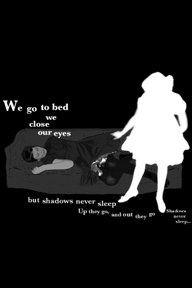
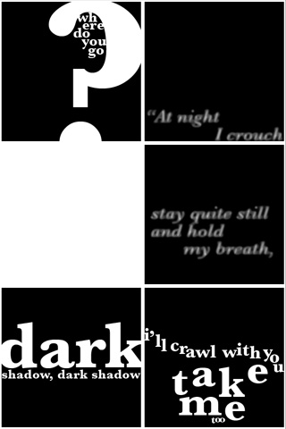
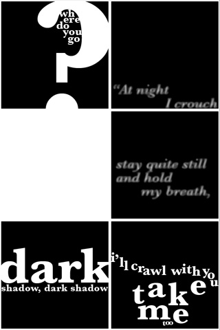

Aya Karpińska
Shadows Never Sleep
- About Shadows Never Sleep
- Video of Shadows Never Sleep
- Download Shadows Never Sleep for iPhone / iPod
- Credits
About Shadows Never Sleep
This project was part of my Master’s thesis at Brown University’s Literary Arts program, which focused on digital media as an emergent field of storytelling for children. The small screen of a mobile deivce has some key strengths, such as the intimate scale, portability, and the ability to be viewed even in bright light conditions. With the iPhone, I had access to an important feature: the multi-touch screen. No mouse, no pointer, no buttons needed to make a story go. Just fingertips. I was particularly interested in the ability to pan and zoom within the display—left and right, up and down, in and out. The iPhone screen is flat like a page, but unlike a page in that its surface can be flicked and pinched to reveal unseen spaces beyond what is immediately visible. New kinds of writing emerged with the transition from scrolls to books. What if turning pages becomes zooming into surfaces and walking your fingers across a screen?

 
Video of Shadows Never Sleep
Or download video (.mp4 format, compatible with computers and iPhone / iPod in Safari)
Download Shadows Never Sleep
Download Shadows Never Sleep from the iTunes App Store (free) – requires iPhone or iPod Touch
Credits
Nick Dalton (http://www.iPhoneIncubator.com) programmed the iPhone app and Roxanne Carter (http://persephassa.com) posed for the silhouettes.